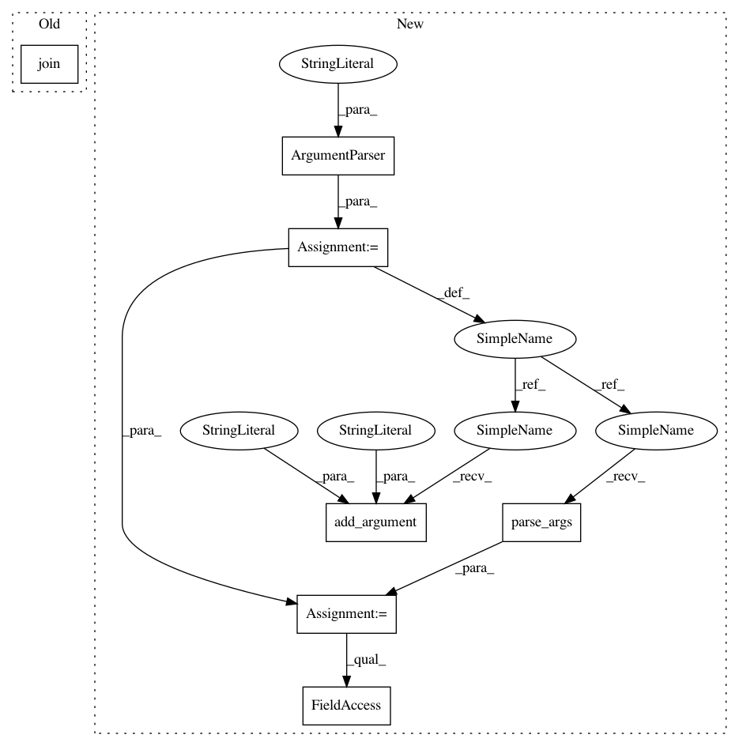

fb7aafd99398e8fbdc74e903e078a884b8ae237f,version.py,,main,#,63
Before Change
// conda
for path in ["recipe"]:
update(
os.path.join(proj_root, "conda", path, "meta.yaml"),
"(?<=version = ")[.0-9a-z]+",
__version__,
)
After Change
def main():
logging.basicConfig(level=logging.INFO)
parser = argparse.ArgumentParser(description="Detect and sychnronize version.")
parser.add_argument(
"--print-version",
action="store_true",
help="Print version to the command line. No changes is applied to files.",
)
parser.add_argument(
"--git-describe",
action="store_true",
help="Use git describe to generate development version.",
)
parser.add_argument("--dry-run", action="store_true")
opt = parser.parse_args()
pub_ver, local_ver = __version__, __version__
if opt.git_describe:
pub_ver, local_ver = git_describe_version()
if opt.print_version:
print(local_ver)
else:
sync_version(pub_ver, local_ver, opt.dry_run)
if __name__ == "__main__":
In pattern: SUPERPATTERN
Frequency: 3
Non-data size: 7
Instances
Project Name: apache/incubator-tvm
Commit Name: fb7aafd99398e8fbdc74e903e078a884b8ae237f
Time: 2020-10-26
Author: tqchen@users.noreply.github.com
File Name: version.py
Class Name:
Method Name: main
Project Name: apache/incubator-tvm
Commit Name: fb7aafd99398e8fbdc74e903e078a884b8ae237f
Time: 2020-10-26
Author: tqchen@users.noreply.github.com
File Name: version.py
Class Name:
Method Name: main
Project Name: Rostlab/nalaf
Commit Name: 6878a5d3dc03a464f99f90cbbd6edcd25eccde75
Time: 2015-06-16
Author: aleksandar.bojchevski@gmail.com
File Name: demo.py
Class Name:
Method Name:
Project Name: scikit-image/scikit-image
Commit Name: ddfac3e42d2ae2e09751de6638d813c76e30ff94
Time: 2018-12-04
Author: mark.harfouche@gmail.com
File Name: tools/check_sdist.py
Class Name:
Method Name: